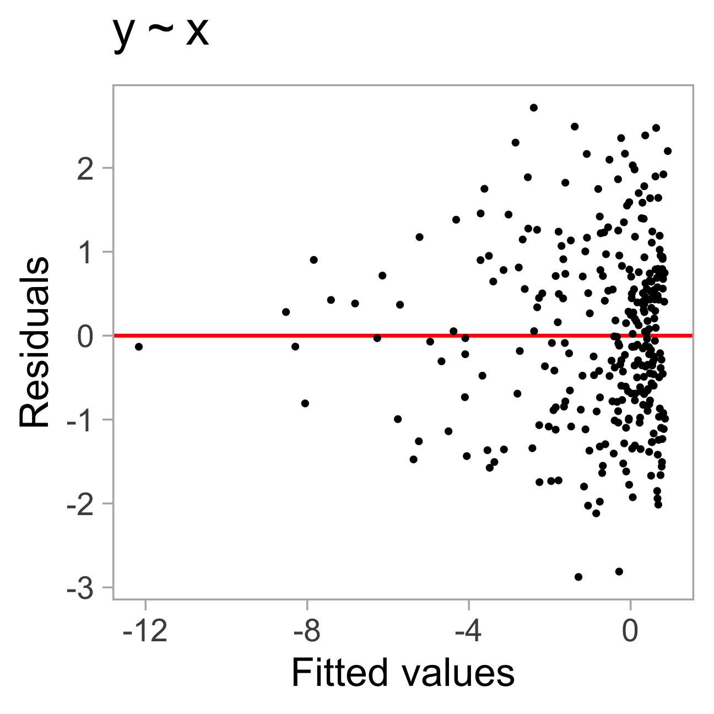
BASF Data Analytics (ML and AI) Community Meeting
Australian National University
Hi! I’m Patrick Li.
PhD in Statistics, Monash University (EBS)
Developed computer vision methods to automate the assessment of regression diagnostic plots.
Postdoctoral Research Fellow, Australian National University (ANU)
Contributing to the Analytics for the Australian Grains Industry (AAGI) project, applying machine learning and image analytics to plant phenotyping.
Current focus: torch-openreml
A PyTorch-based framework for flexible linear mixed-effects modelling using AI-REML estimation.
Prof Dianne Cook
Department of Econometrics and Business Statistics, Melbourne, Monash University
Dr Emi Tanaka
Research School of Finance, Actuarial Studies and Statistics, Australian National University
A/Prof Susan VanderPlas
Department of Mathematics and Statistics, Utah State University
A/Prof Klaus Ackermann
Department of Econometrics and Business Statistics, Melbourne, Monash University, Australia

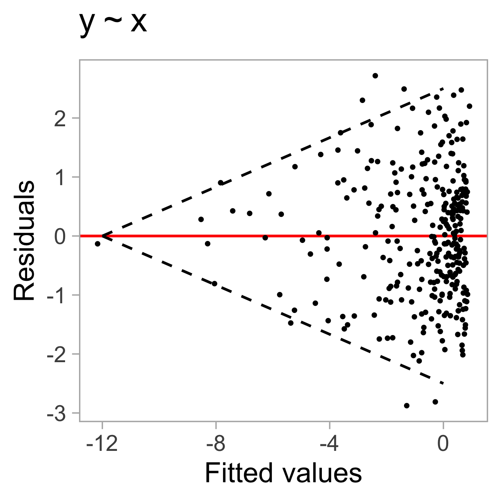
Heteroskedasticity ?
Vertical spread of the points varies with the fitted values.
However, this is an over-interpretation.
The data are simulated from the correctly specified model \boldsymbol{Y} = -\boldsymbol{X} + \boldsymbol{e}, \boldsymbol{e} \sim \mathcal{N} (\boldsymbol{0}, \boldsymbol{I}).
The visual pattern is caused by a skewed distribution of the predictor \ln \boldsymbol{X} \sim \mathcal{N}(\boldsymbol{0}, \boldsymbol{I}).
Visual discoveries that may appear to violate model assumptions:
Specify the null hypothesis H_0
↓
Construct a test statistic T(X)
↓
Derive the null distribution F_0(t) under H_0
↓
Compare the observed statistic t_{\mathrm{obs}} with the null distribution.
For an upper-tailed test, the p-value under H_0 is P\big(T(X) \geq t_{\mathrm{obs}}\big).
Decision: Reject H_0 if p \leq \alpha.
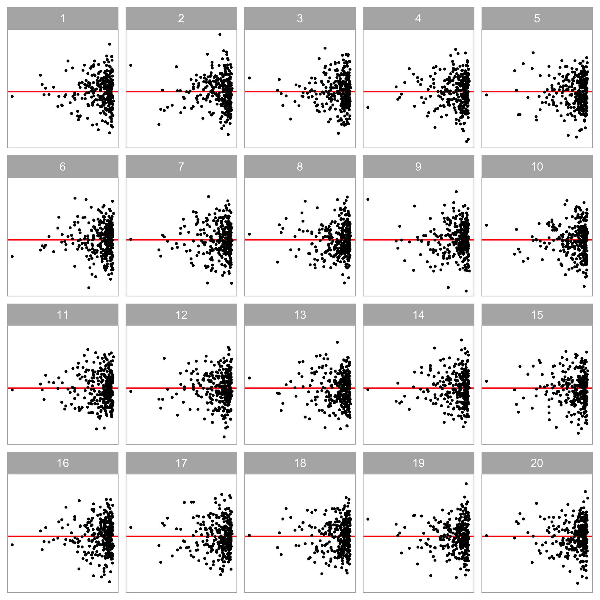
H_0: The linear regression model satisfies all model assumptions.
T(X): The residual v.s. fitted plot.
F_0(t): Simulate residuals from the fitted regression model (details on the next slide) to generate a collection of null plots.
Randomly place the observed plot, t_{\mathrm{obs}}, among 19 null plots to form a lineup. Ask N observers to identify the most different plot(s).
p = P(K \geq k) = \sum_{j=k}^{N} \binom{N}{j} \left(\frac{1}{20}\right)^j \left(1-\frac{1}{20}\right)^{N-j}.
For a classical normal linear regression model:
\hat{\boldsymbol{\beta}} = (\boldsymbol{X}^\top\boldsymbol{X})^{-1}\boldsymbol{X}^\top\boldsymbol{y},\quad \hat{\sigma}^2 = \frac{(\boldsymbol{y} - \boldsymbol{X}\boldsymbol{\beta})'(\boldsymbol{y} - \boldsymbol{X}\boldsymbol{\beta})}{n-p}.
Simulate \tilde{\boldsymbol{e}} \sim N(\boldsymbol{0}, \hat{\sigma}^2\boldsymbol{I})
Obtain \tilde{\boldsymbol{y}} = \boldsymbol{X}\hat{\boldsymbol{\beta}} + \tilde{\boldsymbol{e}}
Estimate \tilde{\boldsymbol{\beta}} = (\boldsymbol{X}^\top\boldsymbol{X})^{-1}\boldsymbol{X}^\top\tilde{\boldsymbol{y}}
Obtain \boldsymbol{e}_{null} = \tilde{\boldsymbol{y}} - \boldsymbol{X}\tilde{\boldsymbol{\beta}}, \quad\hat{\boldsymbol{y}}_{null} = \boldsymbol{X}\tilde{\boldsymbol{\beta}}
✅
All-in-one test: can detect many visually recognisable violations
Validated visual findings: helps identify which visual patterns are truly meaningful and may guide model refinement.
❌
Human constraints:
Resource-intensive: high labour cost and time-consuming
Modern computer vision models are well-suited for addressing this challenge.
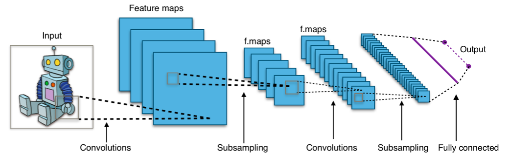
Source: https://en.wikipedia.org/wiki/Convolutional_neural_network
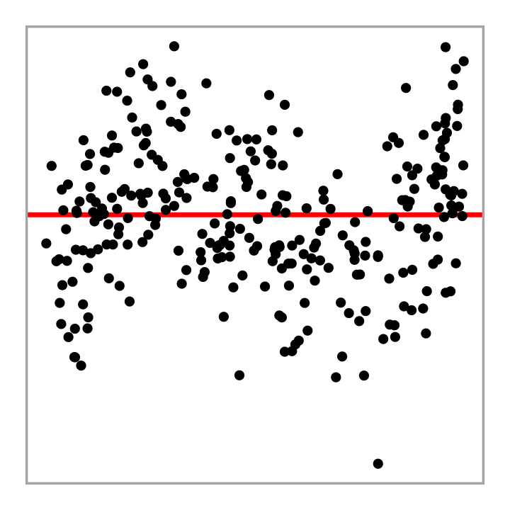
-
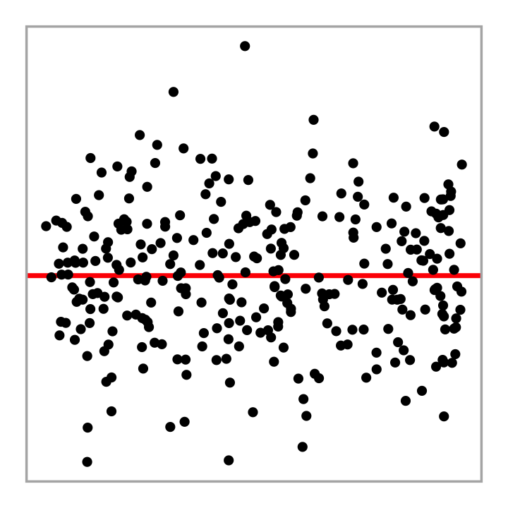
=
?
Under H_0, the residuals are given by
\hat{\boldsymbol{e}} = \left[ \boldsymbol{I} - \boldsymbol{X}(\boldsymbol{X}^\top\boldsymbol{X})^{-1} \boldsymbol{X}^\top \right]\boldsymbol{e}, \quad \boldsymbol{e} \sim \mathcal{N}(\boldsymbol{0}, \sigma^2\boldsymbol{I}).
Let P denote the reference residual distribution of \hat{\boldsymbol{e}}.
If H_0 does not hold but the data-generating process for \boldsymbol{Y} is known, we can similarly derive the actual residual distribution of
\hat{\boldsymbol{e}} = \left[ \boldsymbol{I} - \boldsymbol{X}(\boldsymbol{X}^\top\boldsymbol{X})^{-1} \boldsymbol{X}^\top \right]\boldsymbol{Y},
denoted by Q.
We defined a distance measure based on Kullback-Leibler divergence to quantify the extent of model violations:
D = \log\left(1 + \int_{\mathbb{R}^{n}}\log\frac{p(\hat{\boldsymbol{e}})}{q(\hat{\boldsymbol{e}})}p(\hat{\boldsymbol{e}})d\hat{\boldsymbol{e}}\right).
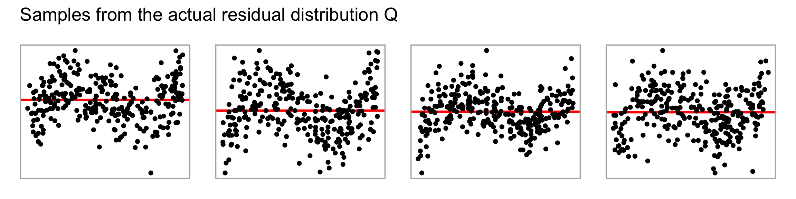
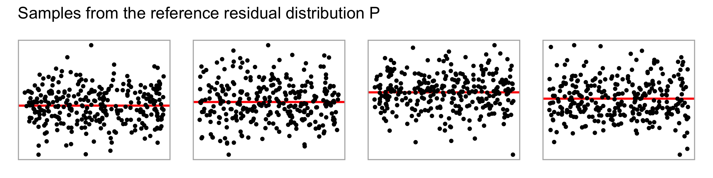
Q
\overset{D}{\longrightarrow}
P
In a simulation, we can control the data-generating process and therefore know the actual residual distribution Q.
Non-linearity + Heteroskedasticity
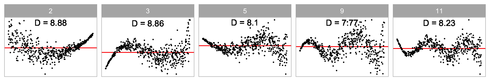
Non-normality + Heteroskedasticity
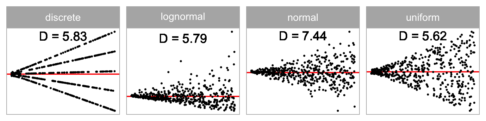
Distribution of predictor
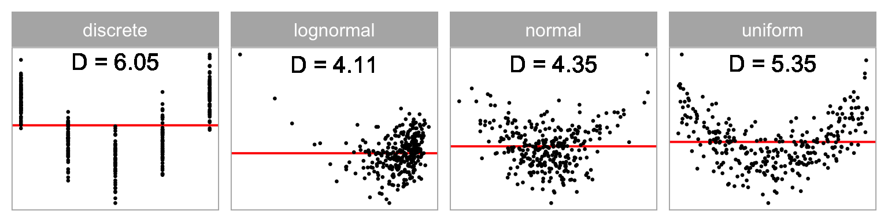
We train a computer vision model to estimate D with 64,000 simulated residual plots:
\widehat{D} = f_{CV}(V_{h \times w}(\hat{\boldsymbol{e}}, \boldsymbol{\hat{y}})),
where V_{h \times w}(.) generates an h \times w image, and f_{CV}(.) predicts a non-negative distance.
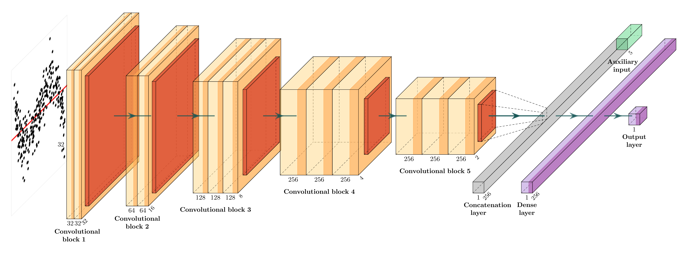
The p-value is the proportion of null plots having \widehat{D} greater than or equal to the observed one.
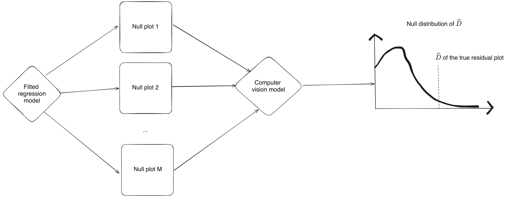
autovi PackageLi, W., Cook, D., Tanaka, E., VanderPlas, S., & Ackermann, K. (2025). Automated Residual Plot Assessment With the R Package autovi and the Shiny Application autovi. web. Australian & New Zealand Journal of Statistics.
rotate_resid()vss()check() and summary_plot()library(autovi)
fitted_model <- lm(MEDV ~ RM + LSTAT + PTRATIO, data = housing)
checker <- residual_checker(fitted_model)
checker$plot_resid()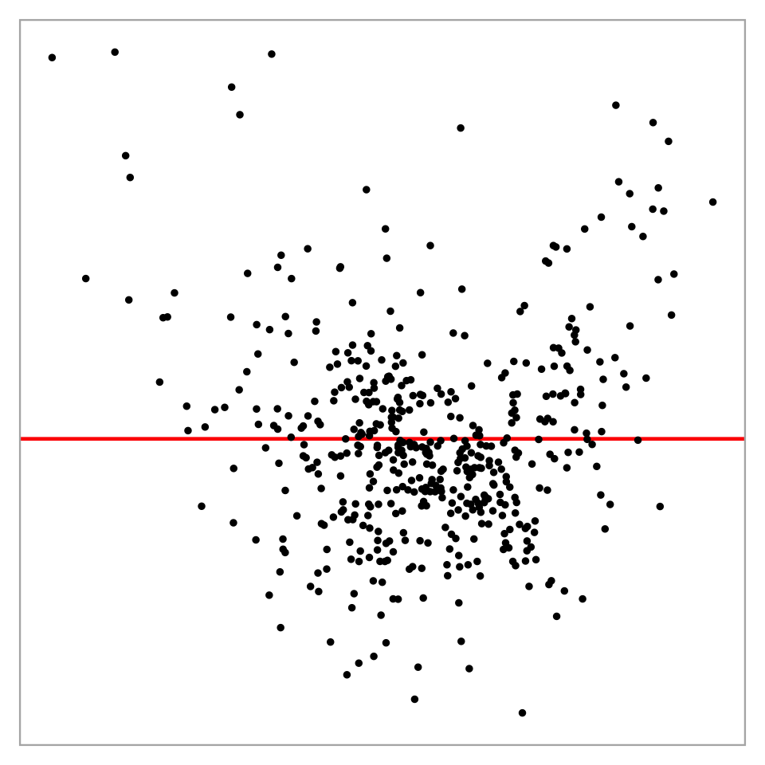
rotate_resid()Null residuals are simulated from the fitted model assuming it is correctly specified.
# A tibble: 489 × 2
.fitted .resid
<dbl> <dbl>
1 632372. 82404.
2 525177. 24363.
3 646753. -16642.
4 624848. 7895.
5 611817. -25387.
6 551051. -128980.
7 504757. -37748.
8 445700. 33616.
9 281912. -17081.
10 453398. -103580.
# ℹ 479 more rowsvss()✔ Predict visual signal strength for 1 image.# A tibble: 1 × 1
vss
<dbl>
1 6.60check() and summary_plot()── <AUTO_VI object>
Status:
- Fitted model: lm
- Keras model: (None, 32, 32, 3) + (None, 5) -> (None, 1)
- Output node index: 1
- Result:
- Observed visual signal strength: 6.484 (p-value = 0)
- Null visual signal strength: [100 draws]
- Mean: 1.169
- Quantiles:
╔══════════════════════════════════════════╗
║ 25% 50% 75% 80% 90% 95% 99% ║
║1.037 1.120 1.231 1.247 1.421 1.528 1.993 ║
╚══════════════════════════════════════════╝
- Bootstrapped visual signal strength: [100 draws]
- Mean: 6.28 (p-value = 0)
- Quantiles:
╔══════════════════════════════════════════╗
║ 25% 50% 75% 80% 90% 95% 99% ║
║5.960 6.267 6.614 6.693 6.891 7.112 7.217 ║
╚══════════════════════════════════════════╝
- Likelihood ratio: 0.7064 (boot) / 0 (null) = Extremely large Breusch–Pagan test p-value = 0.0457
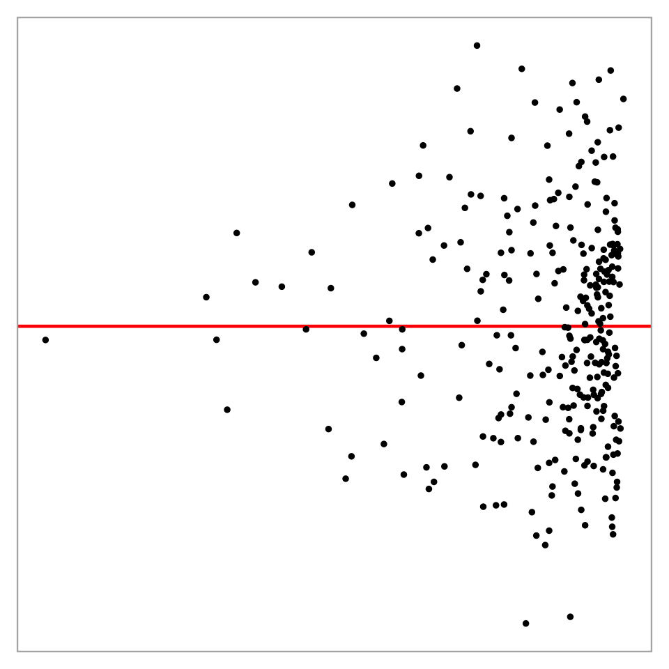
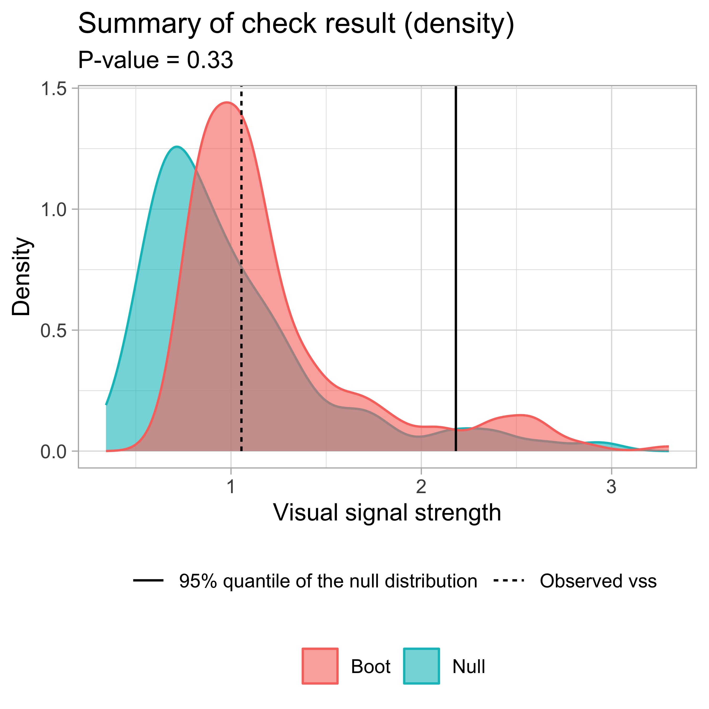
Ramsey Regression Equation Specification Error test p-value = 0.742
Breusch–Pagan test p-value = 0.36
Shapiro-Wilk test p-value = 9.21e-05
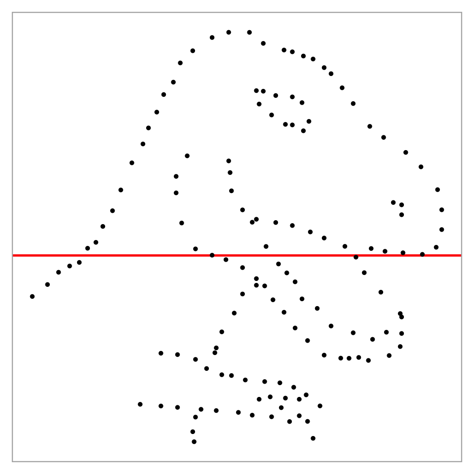
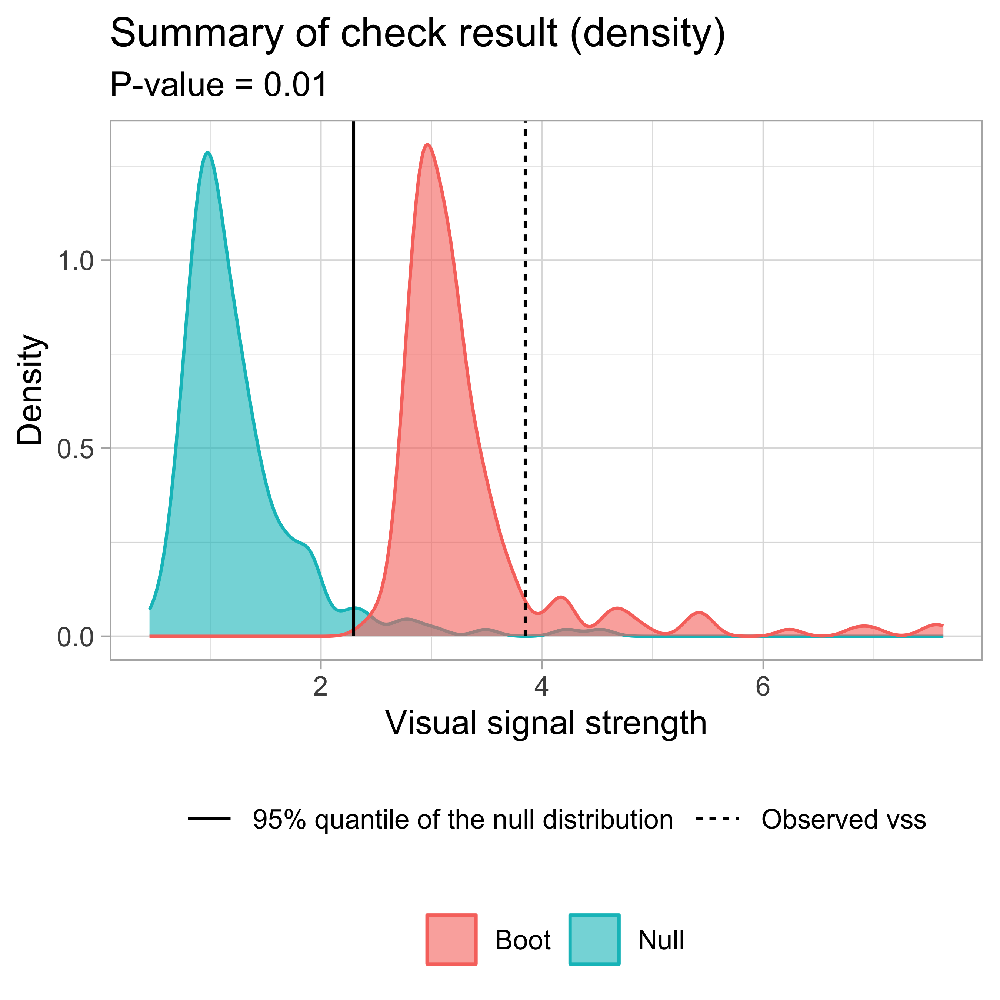
Don’t want to install TensorFlow?
Try our shiny web application: http://autovi.patrickli.org/
With autovi, you can:
Extensions to GLM and LMM frameworks are ongoing research.
References
Li, W., Cook, D., Tanaka, E., VanderPlas, S., & Ackermann, K. (2026). Automated residual plot assessment with the R package autovi and the Shiny application autovi. web. Australian & New Zealand Journal of Statistics, 68(1), e70027.
Li, W., Cook, D., Tanaka, E., VanderPlas, S., & Ackermann, K. (2024). Automated Assessment of Residual Plots with Computer Vision Models. arXiv preprint arXiv:2411.01001.
Li, W., Cook, D., Tanaka, E., & VanderPlas, S. (2024). A plot is worth a thousand tests: Assessing residual diagnostics with the lineup protocol. Journal of Computational and Graphical Statistics, 33(4), 1497-1511.
Buja, A., Cook, D., Hofmann, H., Lawrence, M., Lee, E. K., Swayne, D. F., & Wickham, H. (2009). Statistical inference for exploratory data analysis and model diagnostics. Philosophical Transactions of the Royal Society A: Mathematical, Physical and Engineering Sciences, 367(1906), 4361-4383.
Slides URL: https://basf2026-autovi.patrickli.org/